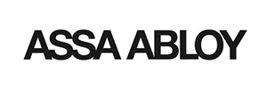

Välkommen till mig
UX-designer, konstnär och grafisk facilitator...
...det är några av mina olika "kepsar"
UX-designer
Som UX-designer jobbar jag med fokus på insikter om användare.
Jag van vid att lära mig nya saker och ta tag i olika arbetsuppgifter.
Mitt arbetssätt är strukturerat och jag har lätt för att ta till mig information, analysera och lösa problem.
Research
Djupintervjuer, faktainsamling och statistik.
Analys
Löser vi ”rätt” problem? Har vi fått fram ”riktiga” insikter?
Arbetar med ”HMW”, ”Jobs to be done”, ”Value proposition canvas”
Idégenerering, ger det nytta för kunden? är det tekniskt möjligt?
Problemlösning
Testar genom att skissa och illustrera
Tar fram personas och kundresor
Gör prototyper i Figma, enklare HTML-sidor och användbarhetstester
Kreativitet
Engagerande workshops där papper och penna välkomnas såväl som Miro-boards.
Case
Här presenteras jag några av de case jag har jobbat med under studietiden på Nackademin.
Om uppdragsgivaren - ClimateView
ClimateView hjälper städer att definiera och utföra klimatomställningar genom att samla in, organisera och presentera information om klimatförändringar.
Uppdraget
Att generera miljöengagemang.
Frågeställning
Hur kan man utforma en tjänst som genererar lokalt miljöengagemang bland ungdomar?
Metoder
Research: Djupintervjuer - Enkät – Omvärldsbevakning
Resultat
Insikter
Tematisk analys genererade: Persona - Proto persona – Kundresa
Idé och lösningsförslag
Våra insikter gav oss kunskapen att gymnasieelever vill och kan, men behöver guidning.
En genväg till eleverna är att gå via lärarna!
Lärarna behöver implementera klimatet i skolundervisningen, men de vet inte hur.
Vad ledde det till för uppdragsgivaren?
Uppdragsgivaren har fått ett konkret underlag för att undersöka gruppen lärare som påverkansfaktor för att generera lokalt engagemang hos ungdomar för klimatet.
Uppdragsgivaren kan gå vidare genom att knyta en grupp lärare till sig för att arbeta med workshops tillsammans med dem.
Då kan uppdragsgivaren få insikter om vad som kan vara effektiva metoder för att anpassa sin produkt till lärarsegmentet.
Reflektioner om egna arbetet
De ungdomar vi intervjuade var främst bosatta i Stockholm.
Det hade varit intressant att undersöka om svaren på enkäten hade blivit annorlunda om vi haft möjlighet att få mer rikstäckande svar.
Hade vi fortsätt arbeta med detta så hade vi gjort mer research om lärarna och deras behov och lagt fokus på att prototypa undervisningsmaterial till lärarna med olika teman.
Vi hade också satt lärarna framför ClimateViews digitala tjänst Panorama och börjat testköra och forma ClimateViews tjänst för hur det skulle möta lärarnas behov.
Vi hade velat undersöka hur lärarna använder tjänsten individuellt, men också tillsammans med eleverna, hur kan de gemensamt ha tjänsten som undervisningsstöd i klasserna?
Arbetsgruppen
5 studenter.
Min roll
UX-researcher och illustratör.

Mer information kommer
Mer information kommer
Mer information kommer
Mer information kommer
Konstnär
Som konstnär målar jag oftast abstrakta motiv i akryl där det ibland tittar in lekfulla figurer.
Jag målar även på beställning där du ger mig storleken och önskad färgskala på målningen.
Grafisk facilitering
Jag använder ofta grafisk facilitering i mitt arbete, både för att tänka själv och tillsammans med andra.
Hos tidigare arbetsgivare har jag hållit kurser i grafisk facilitering för att få andra medarbetare att "komma loss".
Klicka på bild för att öppna större bild.
Om mig
Mina styrkor
Research
Analys
Problemlösning
Kreativitet
Fokusområden
UX design
UX research
Tjänstedesign